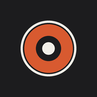
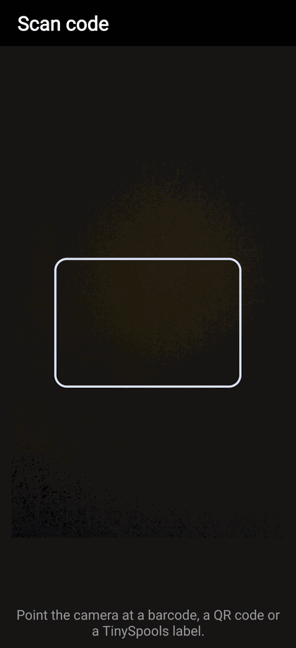
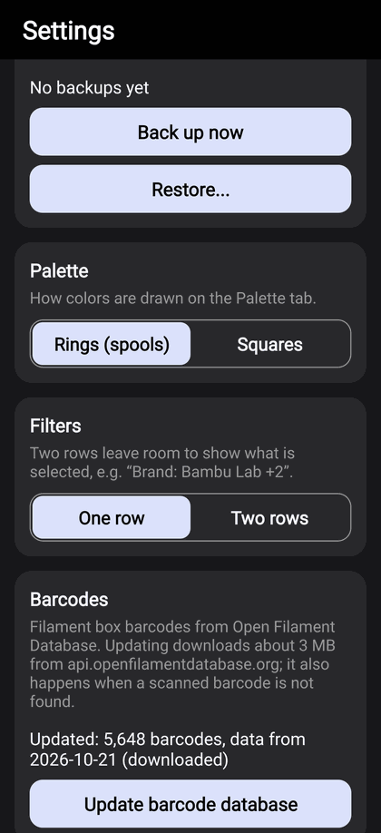
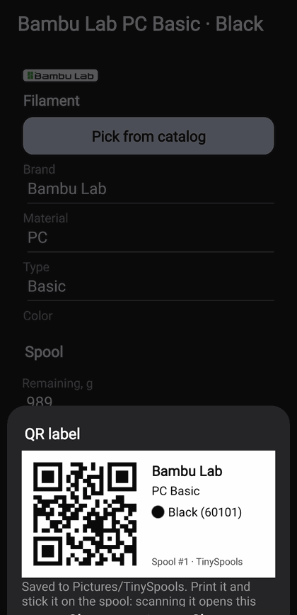
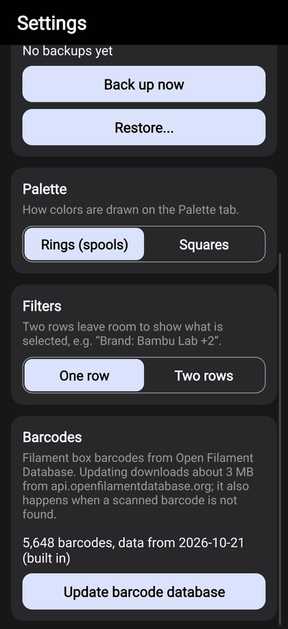

TINYSPOOLS by TinyOwl
Your filament,
sorted.
For people who just want to know what filament they have, where it is and how much is left.
Adding a spool takes seconds, and the palette shows every color you own at a glance.
Add in secondsScan the box barcode, touch a Bambu Lab spool or pick the color from the catalog.
Pick from the paletteEvery color you own, with the grams left.
Know whereGrams left on every spool and shelf, and where it is.
What you see
Three tabs: Spools, Palette, Locations.
A filament is a brand, material, type and color, for example Bambu Lab PETG HF Blue.
A spool is one physical spool of it, with its own grams left and shelf. One filament can have many spools.

Spools
Every filament with its logo, color and code, how many spools you have (×2) and on which shelves; the bar shows each spool's grams left (up to 10, or the total in Settings). Search looks at everything at once; Brand, Material, Type and Color filters show how many spools match each choice, and Show tells how many will be left. Type also filters Spool or Refill.

Palette
Every color you own, grouped by material and drawn as spools (or squares, in Settings). The number is how many spools of that color. Turn on Total remaining above the palette and each color fills by how much is left on all its spools together: a pie on spools, a level on squares, the used part striped. Switch to Opened to see only the spools you have started, with what is left on them, so the next print can use up what is already open. It works together with Material and the other filters. Tap a color to see all its spools from every brand.

Locations
Your shelves, dryers or boxes, each with its number of spools, the grams left on it and a dot for every filament on it. Turn off Group by filaments to see a dot for every spool. Tap one to see only its spools; long-press to rename or delete. + New location adds one.

A spool
Tap a spool card. The big number is the grams left: tap it to type, or use the slider and -50 / -10 / +10 / +50 / Empty. Mark it Spool or Refill, tap a shelf to move it there, and make its QR label or NFC sticker. When adding, - 1 spool + adds several at once. Delete asks first, because the spool's labels stop working.
The theme (System, Dark, Light), the palette style and block order, the Spools list order, the filter
layout (one row or two rows) and how many rows of color dots a location shows (1 to 4) are in the menu → Settings.
Adding filament
Pick it, scan it or type it.

New filament
+ New spool first offers the filaments you already have. For a new one, tap + New filament, then Pick from catalog or fill in the fields: no RGB code? Tap a color and fine-tune it with Hue and Lightness. Save, and the first spool opens right away.

Scan a box
Scan reads the barcode on a filament box. A known barcode finds the filament at once; a new one asks which filament it is, and the app remembers it. Touch a Bambu Lab spool to the phone, even with the app closed: a filament you have opens, a new one is offered with Add. If your phone case holds an access card, turn this off in Settings → NFC. In + New spool the tag fills in the filament. If you entered that filament by hand, the app asks Is it one of these? once, showing your similar filaments with their shelves, and remembers your pick.

Already there?
If the same brand, material, type and color already exist, the app says so and offers Add spool to it instead of a second copy.

Barcode database
5,600+ barcodes from 41 brands come with the app. Settings → Update barcode database downloads the newest; the app also offers it when a scanned barcode is not found.
The catalog
The built-in catalog has 4,700+ colors from 67 brands (SpoolmanDB). Picking one fills in the brand, material,
type, color, RGB value and full spool weight. Everything can be changed before you save, and filaments that are not in
the catalog are simply typed in. Box barcodes come from the Open Filament Database.
Labels, checks and backups
A label on the spool, a check on the shelf.

QR label
In a spool, QR label makes a label with the code, brand, material and color. It is saved to Pictures/TinySpools; Share sends it to your label printer's app. Scanning it with Scan opens that spool.

NFC sticker
NFC tag writes the spool to an empty NFC sticker (NTAG213, 215 or 216). Touching the sticker with the phone opens that spool, even when the app is closed. The phone vibrates and shows what it read. A spool opened from its QR label or NFC sticker is ready to move: tap a location and it moves there at once, with Undo. Closing it takes you back to where you were; tap the filament name under the title to see all its spools.

Check spools
Menu → Check spools → Start check. Mark each spool Found (✓) or Not found (×), shelf by shelf, or touch its sticker. Finish check can move the not found ones to Unassigned: when they turn up, tick them and tap To the shelf.

Backups
Settings → Choose folder, for example on Google Drive, then Back up now, or turn on Auto backup after changes. Each backup is a new file with the date; Restore brings back any of them.
A new phone
On the old phone make a backup to Google Drive. On the new one install TinySpools, choose the same folder and tap
Restore: spools, shelves, your barcodes and settings come back.
Privacy
No account, no ads, no analytics, no tracking, and no server of ours. Everything stays on the phone, except the
backup files you save to a folder of your choice. The app goes online only when you ask it to update the barcode
database. The full policy: tinyowllabs.com/tinyspools/privacy
Questions, ideas, a photo of something wrong
hello@tinyowllabs.com
App and privacy policy
tinyowllabs.com/tinyspools
Independent developer
TinyOwl